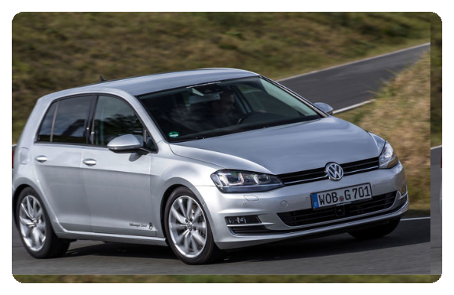
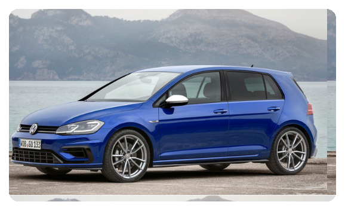
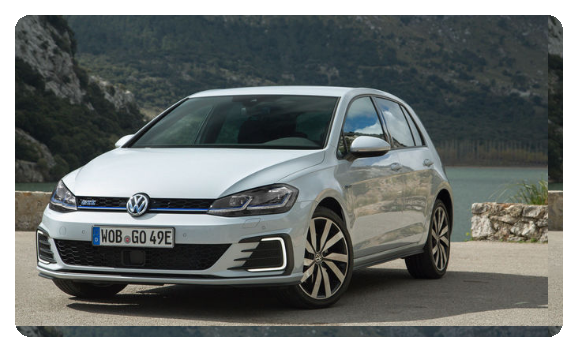
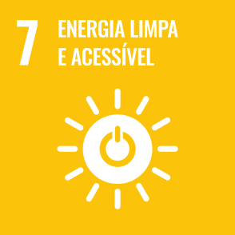

Mostre Seu Conhecimento e Compartilhe Sua Paixão!
Cadastre-se agora e teste seus conhecimentos com nosso quiz exclusivo sobre o VW Golf. Descubra curiosidades, prove que você é um verdadeiro especialista e alcance o topo do ranking dos maiores fãs! Além disso, compartilhe suas experiências no feed de fotos e conecte-se com outros entusiastas do mundo automotivo, independentemente da marca. Aqui, sua paixão tem lugar garantido!"
SOBRE O GOLF

Desde seu lançamento em 1974, o Volkswagen Golf se tornou um dos carros mais populares e influentes do mundo. Conhecido por seu equilíbrio entre desempenho, conforto e tecnologia, o Golf conquistou corações em todas as suas gerações. Com inovações que definiram tendências, ele continua a ser uma referência na indústria automotiva.
Linha do tempo
-

Volkswagen Golf MK1 (1974-1983): O Ícone que Começou Tudo
Em 1974, o mundo automotivo presenciou o nascimento de uma lenda. O Golf MK1 foi criado para substituir o clássico Fusca, mas não apenas isso: ele definiu um novo segmento, o dos hatchbacks compactos. Com seu design assinado por Giorgetto Giugiaro, o MK1 trazia linhas modernas e uma proposta urbana e funcional, que conquistou milhões. Não demorou para que ele se tornasse um símbolo de inovação, especialmente com a introdução da versão GTI, que deu início à era dos esportivos compactos. -

Volkswagen Golf MK2 (1983-1992): Evolução e Sofisticação
Na década de 80, o Golf MK2 elevou o padrão. Maior, mais confortável e repleto de inovações, ele trouxe consigo tecnologias como o sistema ABS e tração integral em algumas versões. O MK2 se destacou também como o carro que consolidou o Golf como um ícone global. Com desempenho aprimorado e maior preocupação com segurança, ele foi a escolha perfeita para aqueles que buscavam estilo e confiabilidade -

Volkswagen Golf MK3 (1991-1997): O Visionário
Com o MK3, a Volkswagen entrou nos anos 90 com ousadia e inovação. Foi o primeiro Golf a ser equipado com airbags e motores mais eficientes, incluindo a introdução de um motor turbo diesel revolucionário. Além disso, foi nessa geração que surgiu o Golf VR6, um modelo com motor de seis cilindros que redefiniu o que um hatchback compacto poderia oferecer em desempenho e potência. -

Volkswagen Golf MK4 (1997-2003): O Refinamento Definitivo
A quarta geração trouxe uma verdadeira revolução em design e qualidade. O MK4 apresentou linhas mais limpas e uma atenção ao acabamento interno que se tornou referência no segmento. Foi nessa época que o Golf ganhou o famoso motor 1.8 Turbo, conquistando entusiastas pelo mundo. Com foco em tecnologia, o MK4 tornou-se um ícone de equilíbrio entre desempenho, conforto e durabilidade. -

Volkswagen Golf MK7 (2012-2020): O Mestre da Modernidade
Com o MK7, o Golf entrou em uma nova era. Construído sobre a inovadora plataforma MQB, ele se tornou mais leve, eficiente e tecnológico do que nunca. Equipado com sistemas de assistência ao motorista, como piloto automático adaptativo e frenagem automática, o MK7 trouxe um nível de sofisticação inédito. A versão GTI dessa geração redefiniu o padrão de esportividade, enquanto o R mostrou que o Golf podia competir até com supercarros em desempenho. -

Volkswagen Golf MK7.5 (2017-2020): A Perfeição Refinada
Lançado como uma atualização de meia geração, o Golf MK7.5 representou o compromisso da Volkswagen em refinar ainda mais um modelo que já era referência. Essa versão trouxe um design renovado com detalhes modernos, como faróis Full LED e novos para-choques que deram ao hatch um visual mais agressivo e sofisticado. -

Volkswagen Golf MK7 GTE (2014-2020): O Futuro Sustentável
Quando a sustentabilidade encontrou a performance, nasceu o Golf MK7 GTE. Com um sistema híbrido plug-in, ele combinava um motor elétrico com o famoso motor 1.4 TSI, oferecendo eficiência e potência em um só pacote. O GTE representou a visão da Volkswagen para um futuro mais verde, sem abrir mão do prazer ao dirigir. Com autonomia elétrica suficiente para o dia a dia e desempenho impressionante em longas distâncias, ele uniu o melhor dos dois mundos. -

Volkswagen Golf MK8 (2020-Presente): A Revolução Digital
A oitava geração do Golf é a mais tecnológica até agora. Com um design futurista e um interior completamente digital, o MK8 foi projetado para um mundo conectado. Sistemas avançados de condução semiautônoma e uma interface amigável tornaram-no uma extensão do estilo de vida moderno. O MK8 não apenas mantém o legado do Golf, mas também o eleva a novos patamares, combinando tradição e inovação como nenhum outro hatchback.
ODS
-

- O Golf traz inovações em segurança, com tecnologias que reduzem riscos de acidentes, promovendo mais proteção no trânsito
- 
- o Golf oferece versões híbridas e elétricas, diminuindo emissões e incentivando a transição para uma mobilidade sustentável
- o Golf lidera com tecnologias de ponta em conectividade e eficiência, influenciando positivamente o setor automotivo.
-

- Ao investir em veículos com menor impacto ambiental, como as versões elétricas, o Golf reforça seu papel na luta contra as mudanças climáticas, reduzindo emissões de carbono e promovendo uma mobilidade mais sustentável e responsável.